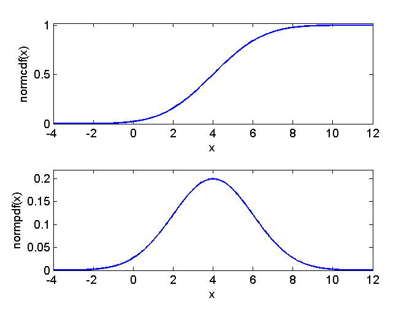
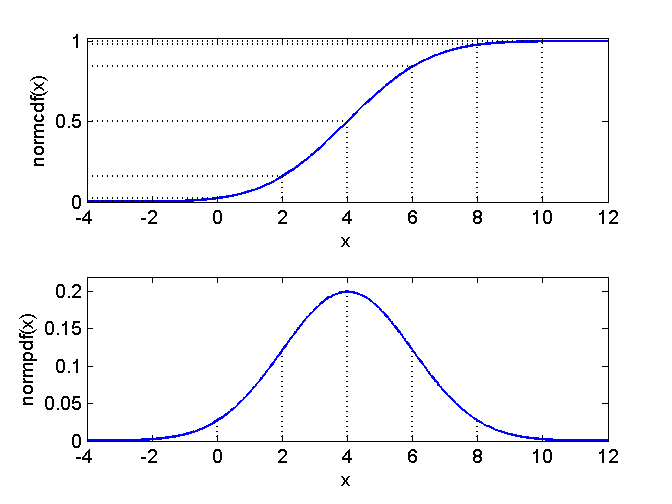

Contents
function demo_normpdf()
demo_normpdf
Plot pdf
mu = 4;
sigma = 2;
alpha = 4;
xMin = mu - alpha*sigma;
xMax = mu + alpha*sigma;
nPlot = 1000;
xPlot = linspace(xMin,xMax,nPlot);
normalPdf = normpdf(xPlot,mu,sigma);
normalCdf = normcdf(xPlot,mu,sigma);
figure(1); clf
subplot(2,1,1);
plot(xPlot,normalCdf)
xlabel('x'); ylabel('normcdf(x)')
axis ([xMin xMax 0 1.02]);
subplot(2,1,2);
plot(xPlot,normalPdf)
xlabel('x'); ylabel('normpdf(x)')
axis ([xMin xMax 0 1.1*normpdf(mu,mu,sigma)]);

Symmetric intervals around the mean
for alpha = 0:3
xLower = mu-alpha*sigma;
xUpper = mu+alpha*sigma;
cdfLower = normcdf(xLower,mu,sigma);
cdfUpper = normcdf(xUpper,mu,sigma);
subplot(2,1,1);
hold on
plot([xLower xLower],[0 cdfLower],'k','LineStyle',':');
plot([xMin xLower],[cdfLower cdfLower],'k','LineStyle',':');
plot([xUpper xUpper],[0 cdfUpper],'k','LineStyle',':');
plot([xMin xUpper],[cdfUpper cdfUpper],'k','LineStyle',':');
hold off
subplot(2,1,2);
hold on;
plot([xLower xLower],[0 normpdf(xLower,mu,sigma)],'k','LineStyle',':');
plot([xUpper xUpper],[0 normpdf(xUpper,mu,sigma)],'k','LineStyle',':');
hold off
end
